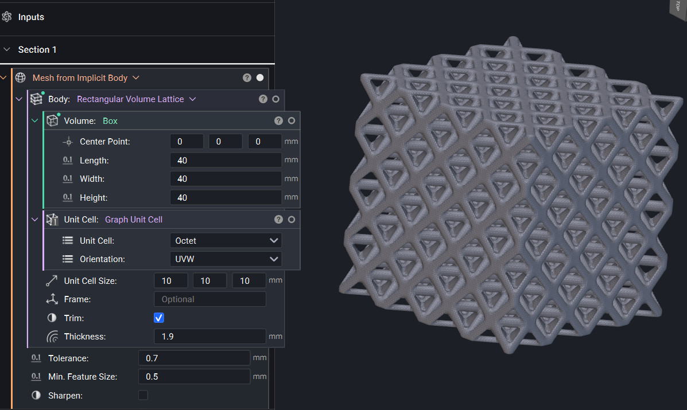

Project Overview
A 40 × 40 × 40 mm octet lattice designed in nTop to maximize strength per unit mass, under a 50% relative-density limit. It was printed in Nylon 12 on an SLS machine as a compression specimen, so it had to survive the build and fit the test fixture. The geometry was driven as much by the SLS process as by the structural target.
Results
Lattice Selection
An octet unit cell was chosen because it’s stretch-dominated: loads run axially through the struts instead of bending them, which makes it efficient for strength per unit mass. A 10 mm unit cell gives a 4 × 4 × 4 array across the cube keeping the lattice fully 3D rather than an extruded 2.5D pattern.
Parametric Sweep
Strut diameter was swept from 1.1 to 1.9 mm to map relative density and mass. Values computed in nTop using Nylon 12 (ρ = 1020 kg/m³).
| Strut Ø (mm) | Relative Density | Mass (g) |
|---|---|---|
| 1.1 | 13.58% | 8.86 |
| 1.3 | 18.29% | 11.94 |
| 1.5 | 23.48% | 15.33 |
| 1.7 | 29.00% | 18.93 |
| 1.9 | 34.87% | 22.76 |
Final Design
The 1.9 mm strut was selected which was the thickest option still under the 50% density limit. Thin struts don’t print cleanly on SLS: they come out with incomplete necks and chalky, under-sintered surfaces, and tend to snap during powder breakout. Going as thick as the density cap allowed gave fully formed and robust struts that survive the build.
Design for SLS
Three process constraints shaped the geometry.
Gallery


Technical Specifications
- Selective Laser Sintering (SLS)
- Nylon 12 (PA12), ρ = 1020 kg/m³
- Designed in nTop
- 3D Octet, stretch-dominated
- 10 mm unit cell, 4×4×4 array
- 1.9 mm strut diameter
- 34.87% relative density
- Bounding box: 40 × 40 × 40 mm
- Relative density < 50% limit
- STL: 46 MB (< 50 MB limit)
- Watertight / manifold mesh